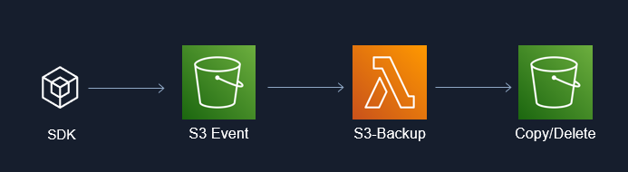

Automated S3 Backup with AWS x Rust
Project Repo: https://github.com/athletedecoded/s3-backup
Automated serverless S3 backup using AWS Lambda x Rust

What I Learnt
- Deploying AWS serverless using Lambda x S3 trigger
- Configuring S3 Access Points and Roles
Developer Setup
Pre-Configure AWS
- Create an IAM User policy for "LambdaDeveloper" with
AWSLambda_FullAccesspermissions and added custom inline permission config
{
"Version": "2012-10-17",
"Statement": [
{
"Sid": "PermissionsToDeploy",
"Effect": "Allow",
"Action": [
"iam:CreateRole",
"iam:CreatePolicy",
"iam:PutRolePolicy",
"iam:AttachRolePolicy",
"iam:UpdateAssumeRolePolicy"
],
"Resource": "*"
}
]
}
- Add "LambdaDeveloper" keys to your local ~/.aws/credentials file with environment variables:
- aws_access_key_id
- aws_secret_access_key
- aws_role_arn
- region
Note: aws_role_arn is copied from the IAM user summary and is formatted as arn:aws:iam::<aws_acct>:user/<iam_user>
- Create an IAM Role policy for "S3xLambdaAccessRole" with
AmazonS3FullAccessandAWSLambdaBasicExecutionRolepermissions - Allocate 3 x S3 Buckets (SourceBucket, OutputBucket, RubbishBucket) and add an Access Point to each
Deploy Lambda Function
# Install cargo lambda
$ python3 -m venv ~/.venv
$ source ~/.venv/bin/activate
$ make install
# Build binary
$ make release
# Deploy to AWS
$ make deploy
AWS Permissions
- From the AWS Lambda Console > Functions > s3-backup > Configuration > Permissions > change Execution role to preconfigured "S3xLambdaAccessRole"
- From the AWS Lambda Console > Functions > s3-backup > Configuration > Environment variables > set the following env variables coinciding with S3 Access Point ARNs:
SRC_AP_ARN,DEST_AP_ARN,RUBBISH_AP_ARN
NB: Access Point ARNs will be of the format arn:aws:s3: